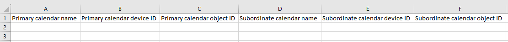
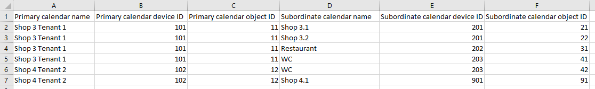
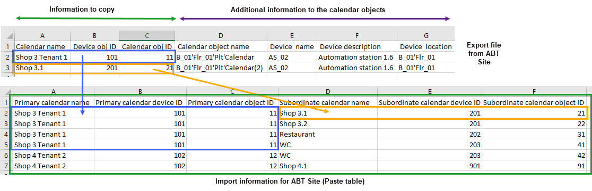
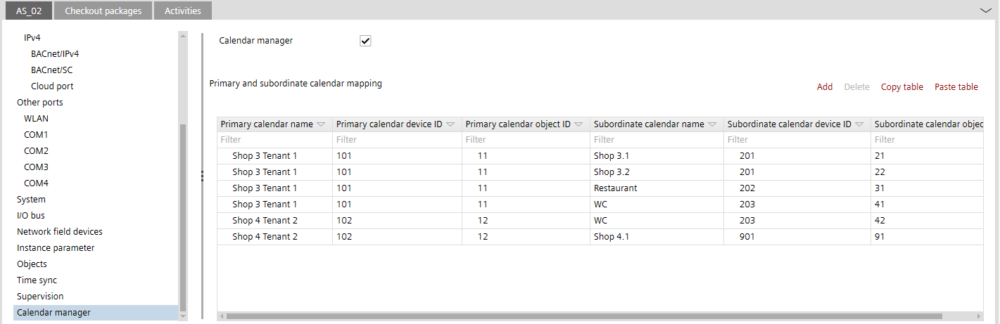

首次配置日历管理器（使用 Excel）
- 1a. In Excel (manually):
- Launch Excel.
- Open an empty sheet.
- In ABT Site, use Copy table to get the correct layout for the Excel table.
Save the calendar manager entries in an Excel table - Paste the ABT Site information into the empty Excel sheet.

- Enter all the information for the primary calendar and the subordinate calendar manually.
Note: Do not use any formatting, such as boldface. - Mark the entries and click <Ctrl> + <C> to save the data to the clipboard.

- Save the Excel file for later use.
- 1b. In Excel (with calendar export file):
- The calendar export file is available.
Export the calendar information of the entire project - The Calendar manager check box is activated.
Activate the calendar manager
- Open the exported calendar file with Excel.
- Open an additional empty Excel sheet. This sheet is required for mapping the primary calendar and the subordinate calendar.
- In ABT Site, use Copy table to get the correct layout for the Excel table.
Save the calendar manager entries in an Excel table - Paste the ABT Site header information into the empty Excel sheet.
- From the ABT Site calendar export file:
- mark the entries in the first 3 columns (blue frame) and copy into the Excel sheet (Primary calendar area).
- mark the entries in the first 3 columns (orange frame) and copy into the Excel sheet (Subordinate calendar area).

- Mark all the entries with the column header (green frame) and click <Ctrl> + <C> to save the data to the clipboard.
- Save the Excel file for later use.
- 2. In ABT Site:
- Select the device where the calendar manager should be stored.
- Select the Calendar manager tab.
- Click Paste table.
- The imported information from the Excel table is stored.

- Download the calendar mapping into the device.
Downloading a control program to a device - Trigger the calendar synchronization to the other devices with the Web interface.
Note: The calendar data is automatically synchronized once a day (during the night).
Synchronizing of the global calendar objects